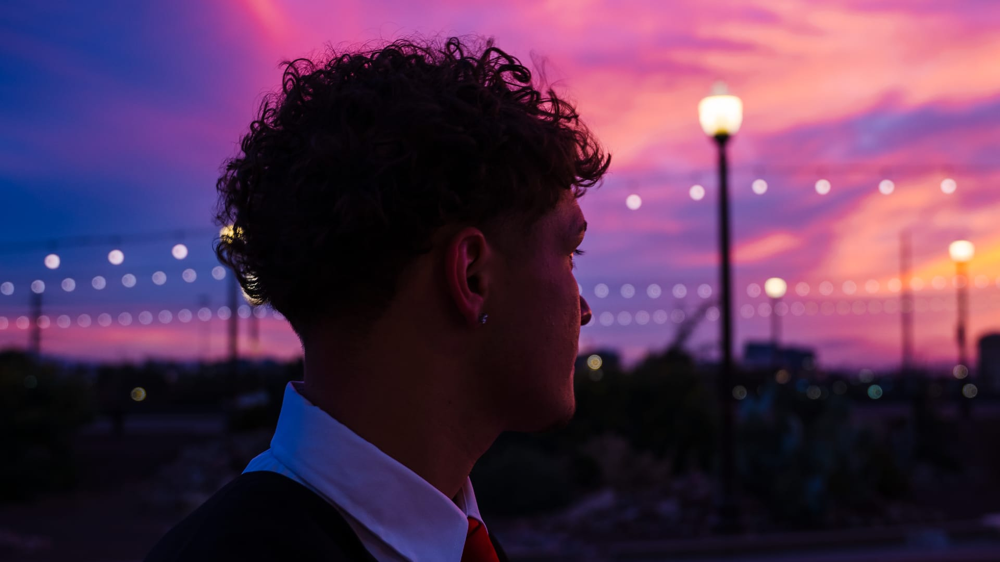

Most booked
Portraits & Grads
from $350
The main character session. Grad gowns on Palm Walk, senior portraits downtown, or just you at golden hour.
Book portraits
Cinematic photographer · Phoenix, Arizona
Graduation, couples, and family sessions across Phoenix and all of Arizona. Directed from the first frame to the final gallery. No posing experience required.
Scene 01EXT. Arizona · Golden hour
Every gallery is graded like a film still. Intentional light, honest color, frames you will want printed. Pick a chapter, or watch it all.
Want to see a whole session start to finish? Browse the portfolio →
Scene 02INT. Your comfort zone
Most people I photograph are not models. They show up a little nervous, unsure what to do with their hands. That's normal, and it's my favorite starting point. I direct the whole session, you just show up as yourself.
Send the inquiry and hear back within 48 hours. We lock your date, pick a location, and talk outfits and vibe. I bring location ideas from all over Arizona.
I direct every frame: where to stand, what to do with your hands, when to move, when to laugh. Most people loosen up inside the first fifteen minutes.
Your edited gallery premieres as a private link within 7 to 10 days. Download everything, print anything, post whatever you love.
Scene 03Now booking · All of Arizona
Straightforward pricing with no fine print surprises. Every session includes direction, cinematic color, and a private online gallery.
Most booked
from $350
The main character session. Grad gowns on Palm Walk, senior portraits downtown, or just you at golden hour.
Book portraitsfrom $400
For the two of you. Proposals, anniversaries, engagements, or a random Tuesday that deserves a movie poster.
Book couplesfrom $500
Guided enough to get everyone in frame, loose enough to feel like a good Saturday. Candids included by design.
Book familiesLarger group? Reach out, I'll put together something that works.
A booking fee reserves your date and counts toward your total. Full details in the booking policy.
Scene 04The reviews are in
★★★★★
"My friends keep saying my grad photos look like they're from a movie. Alan just knows how to work with light and angles."
★★★★★
"Honestly I was nervous going in but it ended up being way more chill than I expected. The final images looked way better than I thought they would."
★★★★★
"I almost went with one of those mini session photographers. I'm glad I didn't. Alan's work doesn't look like anyone else's."
Scene 05Meet the director
"I started AlansCinematics because I wanted images that feel like something, not just proof that a moment happened."
I'm Alan, a self-taught cinematic photographer based in Phoenix, Arizona, raised in Queens, New York. My style is cinematic, candid, and intentional. I'll direct you when you need it and disappear when you don't.
Grad session, couples shoot, or family portraits, the approach never changes: you look like yourself, just elevated.
Directed & shot by Alan
Let's work togetherEvery session is a short film about you.
Now showing across Arizona
Scene 06Q & A
Phoenix, Arizona, and available for sessions across the state: Scottsdale, Tempe, Chandler, Mesa, Gilbert, Sedona, and beyond.
Yes. I'm always up for traveling within Arizona for the right session. For destinations outside the state, reach out and we'll figure out what makes sense.
Most galleries premiere within 7 to 10 days of your session. During busy seasons it may run slightly longer, but I'll always keep you updated.
Each session has a guaranteed minimum, and I usually deliver more when the session calls for it. Every image in your gallery will be worth downloading.
Something that feels like you, just a little elevated. Neutral tones, earthy colors, and simple textures photograph beautifully. Above all, wear what makes you feel confident.
Yes. I know Arizona well and keep go-to spots for different looks. Have a place in mind? Great. If not, I'll suggest a few based on your session type and the mood you want.
That's my most common starting point. You don't need to know how to pose, that's my job. I direct movement and conversation until it feels natural. Most people loosen up in the first fifteen minutes.
Of course. A friend, partner, or family member is welcome. Familiar company helps you relax, and it often makes for great candid moments too.
Yes: ASU, GCU, U of A, and other Arizona campuses. I know the best spots at each. If you have a specific campus location in mind, we can work it in.
Life happens. Reach out as early as you can and we'll find a new date that works. The full policy is in the booking terms.
Fill out the inquiry form below with your session type, preferred date, and a bit about what you have in mind. You can also DM me on Instagram. I reply within 48 hours.
Scene 07Final scene · Your move
No pressure and no commitment. Tell me what you're picturing and I'll reply within 48 hours. Not sure about location or timing yet? Completely fine, we'll figure it out together.